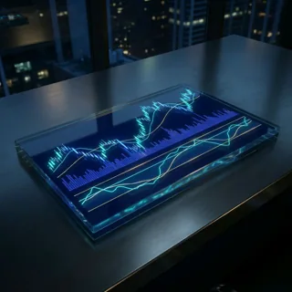

Bar Replay trên TradingView cho phép bạn ẩn toàn bộ nến tương lai và tua lại từng cây nến lịch sử như thị trường đang chạy thật. Để backtest intraday (1m–4H) và lấy tối đa 20.000 cây nến lịch sử, bạn cần gói trả phí từ Essential đến Premium, kết hợp ghi chép tối thiểu 100 lệnh để đánh giá đúng kỳ vọng lợi nhuận (Expectancy).
Mục lục bài viết
1. Bar Replay là gì? Tại sao bắt buộc phải backtest?
Sai lầm đắt giá nhất của phần lớn trader mới là học một phương pháp trên YouTube rồi nạp tiền thật vào đánh ngay. Khi nhìn biểu đồ quá khứ đã hình thành xong, não bộ sẽ mắc thiên kiến nhận thức muộn (Hindsight Bias) — thấy điểm nào cũng dễ thắng.
Bar Replay (Phát lại thanh) giải quyết triệt để vấn đề này bằng cách cắt bỏ toàn bộ phần biểu đồ phía bên phải mốc thời gian bạn chọn, sau đó phát từng cây nến một theo tốc độ tùy chỉnh. Trong 2 giờ luyện tập với Bar Replay, bạn có thể tích lũy kinh nghiệm tương đương 6 tháng giao dịch thực tế mà không tốn một đồng học phí thị trường nào.
2. So sánh giới hạn Bar Replay giữa các gói TradingView
Số lượng nến lịch sử (Historical Bars) quyết định bạn có thể tua ngược về bao xa trên khung nhỏ như M5 hoặc M15. Bảng dưới đây tóm tắt giới hạn thực tế:
| Tiêu chí | Basic (Free) | Essential | Plus | Premium |
|---|---|---|---|---|
| Khung Ngày/Tuần/Tháng | Có | Có | Có | Có |
| Khung Intraday (1m – 4H) | Không | Có | Có | Có |
| Số nến lịch sử tối đa | 5.000 nến | 10.000 nến | 10.000 nến | 20.000 nến |
| Backtest đa khung cùng lúc | Không (1 biểu đồ) | 2 biểu đồ/tab | 4 biểu đồ/tab | 8 biểu đồ/tab |
3. Quy trình 6 bước backtest chuẩn bằng Bar Replay
- Viết rõ bộ quy tắc vào lệnh (Trading Plan): Ghi ra giấy điều kiện xu hướng, mẫu hình nến xác nhận, điểm đặt Stop Loss và Take Profit cố định trước khi bấm Replay. Tuyệt đối không đổi luật giữa chừng.
- Mở công cụ Replay: Nhấn nút Replay (biểu tượng mũi tên tua ngược) trên thanh công cụ trên cùng.
- Chọn điểm bắt đầu ngẫu nhiên: Di chuyển đường dọc màu xanh về một mốc thời gian cách hiện tại từ 3–12 tháng (hoặc dùng Select date / Random bar để loại bỏ trí nhớ về cú sập hay sóng tăng cũ).
- Phân tích và đặt lệnh giả lập: Dùng công cụ Long/Short Position hoặc thanh Replay Trading để ghi nhận điểm vào, SL, TP.
- Tua từng cây nến bằng phím tắt: Nhấn
Shift + →để nhảy từng cây nến một, thay vì bấm Play tự động quá nhanh khiến bạn bỏ lỡ phản ứng giá tại vùng quan trọng. - Ghi nhật ký đủ 100 lệnh: Lưu lại ảnh chụp màn hình và lý do thắng/thua cho từng lệnh vào Google Sheets hoặc Notion.
4. Mẹo backtest đa khung thời gian không bị lộ tương lai
Rất nhiều trader giao dịch theo phong cách Top-Down Analysis (xem xu hướng H4/D1, tìm điểm vào lệnh M15). Để Bar Replay đồng bộ chính xác trên nhiều khung:
- Chia màn hình thành 2 khung (trái:
H4, phải:M15) — xem thêm cách thiết lập Multi-Chart Layout trên TradingView. - Trong menu bố cục (Select Layout), bật tùy chọn đồng bộ Symbol và Date Range.
- Chọn mốc cắt Bar Replay trên khung nhỏ nhất (M15) để đảm bảo nến H4 bên cạnh chỉ cập nhật đúng đến cây nến M15 hiện tại, không bị lộ râu nến đóng cửa của tương lai.
5. 4 chỉ số bắt buộc phải đo khi backtest
Đừng chỉ nhìn vào tỷ lệ thắng (Winrate). Một hệ thống có Winrate 40% vẫn kiếm tiền cực tốt nếu tỷ lệ R:R trung bình là 1:3. Hãy đánh giá hệ thống qua 4 con số:
- Winrate (% thắng): Tỷ lệ lệnh đạt TP trên tổng số lệnh.
- Average Risk:Reward (R:R trung bình): Lợi nhuận trung bình mỗi lệnh thắng chia cho mức lỗ trung bình mỗi lệnh thua.
- Expectancy (Kỳ vọng toán học): Công thức
(Winrate × Avg Win) - (Lossrate × Avg Loss). Nếu chỉ số này dương rõ rệt sau 100 lệnh, hệ thống có lợi thế thống kê. - Max Drawdown (Sụt giảm tài khoản tối đa): Chuỗi thua liên tiếp dài nhất để bạn biết mình có chịu nổi áp lực tâm lý hay không.
Kinh nghiệm thực tế: Khi backtest với 20.000 nến trên gói Premium, bạn có thể kiểm thử gần 7 tháng dữ liệu khung M15 của XAU/USD hoặc BTC/USDT chỉ trong một phiên duy nhất mà không bị đứt quãng dữ liệu.
6. Câu hỏi thường gặp (FAQ)
Tài khoản TradingView miễn phí có dùng được Bar Replay khung 15m hoặc 1H không?
Không. Gói Basic miễn phí chỉ hỗ trợ Bar Replay trên khung Ngày (1D), Tuần (1W) và Tháng (1M). Để tua nến khung intraday (1m, 5m, 15m, 1H, 4H) bạn cần từ gói Essential trở lên.
Cần backtest tối thiểu bao nhiêu lệnh bằng Bar Replay?
Tối thiểu 100 lệnh liên tiếp trải qua cả thị trường có xu hướng và thị trường đi ngang để tránh ảo giác từ một vài chuỗi thắng ngắn hạn.
Bar Replay có đặt lệnh Buy/Sell giả lập trực tiếp được không?
Có. TradingView tích hợp sẵn chế độ Replay Trading cho phép đặt lệnh Market/Limit, SL/TP ngay lúc tua nến và tự xuất báo cáo Profit Factor, Winrate và Drawdown.
Mở Khóa 20.000 Nến Lịch Sử & Bar Replay Intraday
Nâng cấp TradingView Premium với mức giá ưu đãi chỉ 6,3 triệu/năm (tiết kiệm 72% so với giá gốc) tại TradingView.vn.
Xem Bảng Giá Ưu Đãi